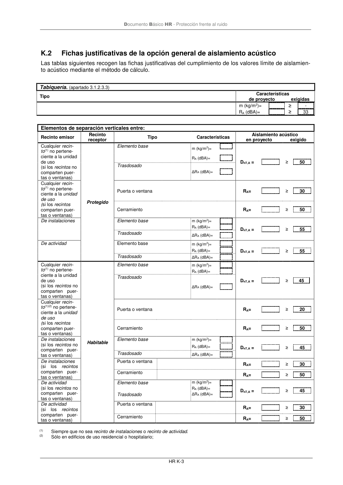

DB-HR Protección frente al ruido · edición 2019-12-20 · capa oficial
Documento DB-HR-oficial · SHA-256 del PDF a67baeca5138bb1f121f797d23a79a4557bd9ac4abacd954024893e05411eeab
Página física 77 de 80.
Copia fiel del PDF fuente · Fuente oficial
Ficha de la disposición en la fuente oficial
Formato: Texto de la página (Markdown)
Documento Básico HR - Protección frente al ruido HR K-3 K.2 Fichas justificativas de la opción general de aislamiento acústico Las tablas siguientes recogen las fichas justificativas del cumplimiento de los valores límite de aislamien- to acústico mediante el método de cálculo. Tabiquería. (apartado 3.1.2.3.3) Tipo Características de proyecto exigidas m (kg/m2)= ≥ - RA (dBA)= ≥ 33 Elementos de separación verticales entre: Recinto emisor Recinto receptor Tipo Características Aislamiento acústico en proyecto exigido Cualquier recin- to(1) no pertene- ciente a la unidad de uso (si los recintos no comparten puer- tas o ventanas) Protegido Elemento base m (kg/m2)= DnT,A = ≥ 50 RA (dBA)= Trasdosado ΔRA (dBA)= Cualquier recin- to(1) no pertene- ciente a la unidad de uso (si los recintos comparten puer- tas o ventanas) Puerta o ventana RA= ≥ 30 Cerramiento RA= ≥ 50 De instalaciones Elemento base m (kg/m2)= DnT,A = ≥ 55 RA (dBA)= Trasdosado ΔRA (dBA)= De actividad Elemento base m (kg/m2)= DnT,A = ≥ 55 RA (dBA)= Trasdosado ΔRA (dBA)= Cualquier recin- to(1) no pertene- ciente a la unidad de uso (si los recintos no comparten puer- tas o ventanas) Habitable Elemento base m (kg/m2)= DnT,A = ≥ 45 RA (dBA)= Trasdosado ΔRA (dBA)= Cualquier recin- to(1)(2) no pertene- ciente a la unidad de uso (si los recintos comparten puer- tas o ventanas) Puerta o ventana RA= ≥ 20 Cerramiento RA= ≥ 50 De instalaciones (si los recintos no comparten puer- tas o ventanas) Elemento base m (kg/m2)= DnT,A = ≥ 45 RA (dBA)= Trasdosado ΔRA (dBA)= De instalaciones (si los recintos comparten puer- tas o ventanas) Puerta o ventana RA= ≥ 30 Cerramiento RA= ≥ 50 De actividad (si los recintos no comparten puer- tas o ventanas) Elemento base m (kg/m2)= DnT,A = ≥ 45 RA (dBA)= Trasdosado ΔRA (dBA)= De actividad (si los recintos comparten puer- tas o ventanas) Puerta o ventana RA= ≥ 30 Cerramiento RA= ≥ 50 (1) Siempre que no sea recinto de instalaciones o recinto de actividad. (2) Sólo en edificios de uso residencial o hospitalario;

Datos candidatos: compruebe celdas y notas en el PDF.